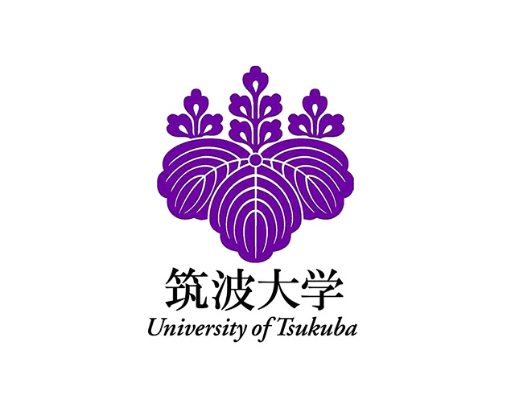
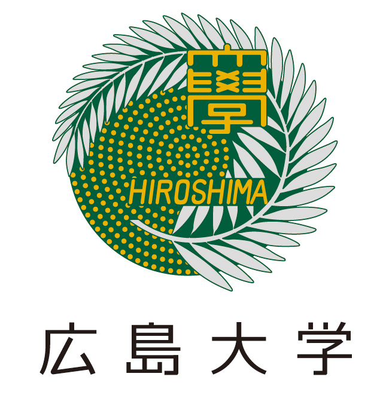
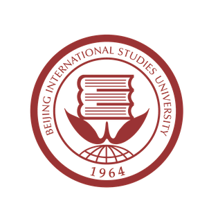

Effects of Field and Strength Training Load on Injury Risk in Japanese Collegiate American Football Players
Boyuan Zhou, Kazuma Yamazaki, Takashi Fukuda
Journal of Kinesiology, 28(2), 16-26, 2026. Peer-reviewed, first author. View article
Sport Medicine · Training Load · Injury Prevention
周 伯源 / Zhou Hakugen
Doctoral student in sport medicine at the University of Tsukuba, with research focused on training load, injury prevention, strength training, and American football.

Boyuan Zhou is a doctoral student in the Sport Medicine Degree Program at the University of Tsukuba. His research connects sport science and applied athlete support, with current work on training load, injury risk, strength performance, fatigue prediction, and American football athletes.
Academic Updates
“Predicting Athlete Fatigue Using Machine Learning Methods: Insights From Gps And Heart Rate Monitoring In College Football Practice.”
“Effects of Field and Strength Training Load on Injury Risk in Japanese Collegiate American Football Players.”
“Machine Learning Analysis of Practice and Game Workload Patterns in Collegiate American Football.”
“Relationship between Neck Musculature and Head Kinematics during a Collision in University American Football Players.”
Awarded for research on training load and strength performance in Japanese collegiate American football players.
Academic Training

University of Tsukuba, Graduate School of Comprehensive Human Sciences
3-year doctoral program student in the Degree Program in Sport Medicine.
University of Tsukuba, Graduate School of Comprehensive Human Sciences
Master of Physical Education, awarded by the University of Tsukuba in March 2024.

Hiroshima University, School of Medicine, Department of Health Sciences
Academic training in physical therapy within the Faculty of Medicine.

Beijing International Studies University
Undergraduate major in Japanese.
Research Output
Boyuan Zhou, Kazuma Yamazaki, Takashi Fukuda
Journal of Kinesiology, 28(2), 16-26, 2026. Peer-reviewed, first author. View article
Takashi Fukuda, Kazuma Yamazaki, Boyuan Zhou
The Asian Journal of Kinesiology, 28(1), 11-18, 2026. Peer-reviewed. View article
4th International Conference on Athletes Care & Performance, 2024
Awarded for “The relationship between training load and strength performance in Japanese collegiate American football players.”
Licenses and Certifications
Practice Settings
Contact
Email: hakugen1997 [at] gmail.com · ORCID: 0009-0006-8721-925X · researchmap profile
Community and Event Support
Social Contribution
National Team and Development Team Support
Event Medical and Athletic Training Support